那麼轉換後的正三角形
雜訊
在開始接觸圖學後常常都會聽到的用詞
這次將收集起來的資料及作法統整在一起
一般談到雜訊時會有幾種基本的分類
這次收集並實作 Value Noise、Perlin Noise 及 Simplex Noise
由於自己也是剛學習雜訊相關的知識，內容多半都是引用其他文章並加入自己的理解，若有錯誤歡迎直接指正
在講解實作之前，先來談談為何需要雜訊，以及能夠運用它的時機
雜訊其實就是給定一個輸入訊號，透過隨機轉換後，將輸入訊號轉換成輸出訊號
就像是一般在撰寫 Unity 腳本時，我們常常使用到 Random.Range 來取得隨機值
而雜訊也就是隨機值演化而來的功能
但為何我們需要這麼多種產生雜訊的作法呢？
單單透過 Random.Range 來計算不是一樣可以取得相當隨機的訊號嗎？
的確，我們可以透過完全隨機隨機來取得如下圖的雜訊訊號
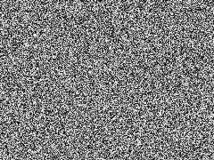
但結果卻相當不自然
在圖學中往往不會使用這麼不自然的雜訊
火焰、紋理、波浪…等等都會有他們的特殊細節
為了這些細節的呈現就演化出了這麼多種不同的雜訊作法
在講解雜訊之前
要先談一下這邊所使用的緩和曲線種類
這次一共使用了四種運算方法，Point、Linear、Fade1、Fade2
其中產生的結果會依據曲線而有不同變化
Point Interpolating Method
直接回傳訊號而不使用插值運算
private static float InterpolatePoint(float x, float y, float t)
{
return x;
}Linear Interpolating Method
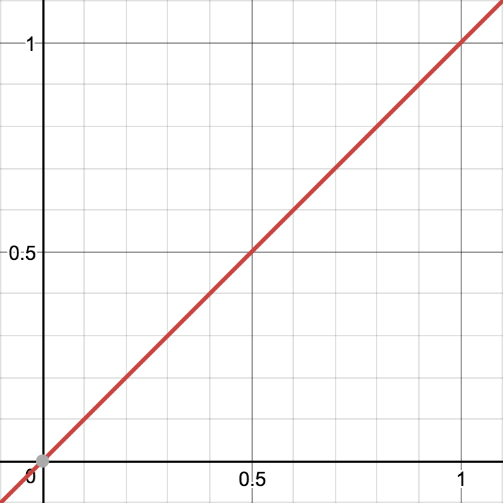
回傳線性插值訊號
private static float InterpolateLinear(float x, float y, float t)
{
return Mathf.Lerp(x, y, t);
}Fade1 Interpolating Method
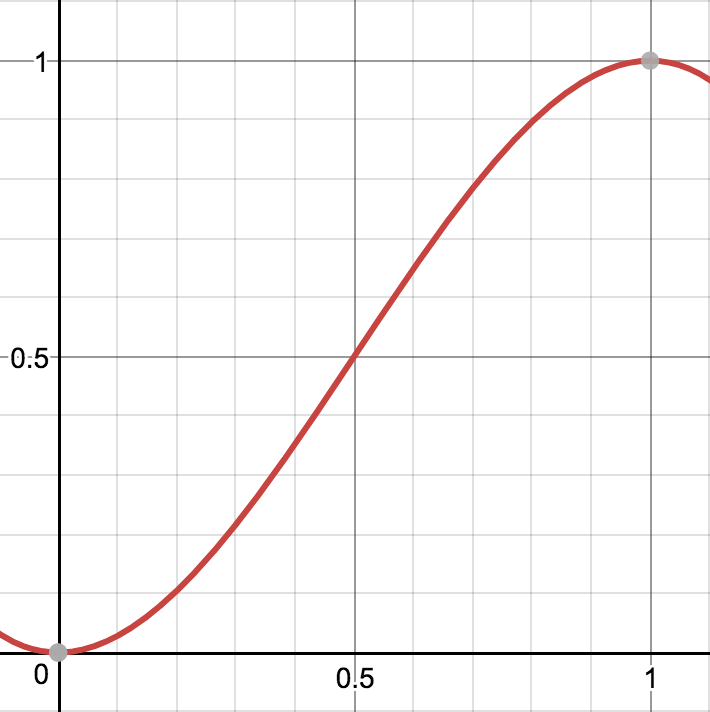
使用緩和方程式
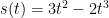
private static float InterpolateFade1(float x, float y, float t)
{
t = t * t * (3 - 2 * t);
return Mathf.Lerp(x, y, t);
}Fade2 Interpolating Method
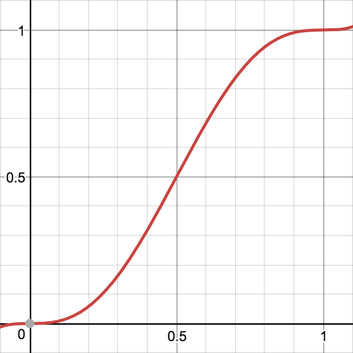
使用緩和方程式
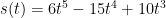
private static float InterpolateFade2(float x, float y, float t)
{
t = t * t * t * (6 * t * t - 15 * t + 10);
return Mathf.Lerp(x, y, t);
}在分類中，Value Noise 屬於 Lattice based Noise，是最為常見的雜訊之一
每一個輸入訊號都會對應到一個晶格結構
晶格在不同維度中有著不同的對應結構
一維空間中對應線段，共兩個頂點
二維空間中對應網格，共四個頂點
三維空間中對應立方體，共八個頂點
在 N 維空間中則使用
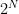
個頂點而每個頂點都包含了一個隨機值
這個隨機值可以使用 Hashtable 或 Mathematics 來產生
再透過不同的緩和曲線
來進行不同頂點間隨機值的插值運算
Value Noise with Point Interpolating
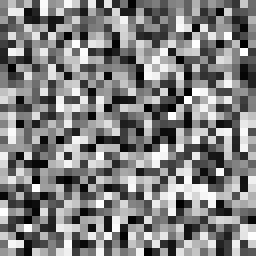
Value Noise with Linear Interpolating
Value Noise with Fade1 Interpolating
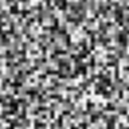
Value Noise with Fade2 Interpolating
Value Noise – C#
private static int[] m_hash = {
151,160,137, 91, 90, 15,131, 13,201, 95, 96, 53,194,233, 7,225,
140, 36,103, 30, 69,142, 8, 99, 37,240, 21, 10, 23,190, 6,148,
247,120,234, 75, 0, 26,197, 62, 94,252,219,203,117, 35, 11, 32,
57,177, 33, 88,237,149, 56, 87,174, 20,125,136,171,168, 68,175,
74,165, 71,134,139, 48, 27,166, 77,146,158,231, 83,111,229,122,
60,211,133,230,220,105, 92, 41, 55, 46,245, 40,244,102,143, 54,
65, 25, 63,161, 1,216, 80, 73,209, 76,132,187,208, 89, 18,169,
200,196,135,130,116,188,159, 86,164,100,109,198,173,186, 3, 64,
52,217,226,250,124,123, 5,202, 38,147,118,126,255, 82, 85,212,
207,206, 59,227, 47, 16, 58, 17,182,189, 28, 42,223,183,170,213,
119,248,152, 2, 44,154,163, 70,221,153,101,155,167, 43,172, 9,
129, 22, 39,253, 19, 98,108,110, 79,113,224,232,178,185,112,104,
218,246, 97,228,251, 34,242,193,238,210,144, 12,191,179,162,241,
81, 51,145,235,249, 14,239,107, 49,192,214, 31,181,199,106,157,
184, 84,204,176,115,121, 50, 45,127, 4,150,254,138,236,205, 93,
222,114, 67, 29, 24, 72,243,141,128,195, 78, 66,215, 61,156,180,
151,160,137, 91, 90, 15,131, 13,201, 95, 96, 53,194,233, 7,225,
140, 36,103, 30, 69,142, 8, 99, 37,240, 21, 10, 23,190, 6,148,
247,120,234, 75, 0, 26,197, 62, 94,252,219,203,117, 35, 11, 32,
57,177, 33, 88,237,149, 56, 87,174, 20,125,136,171,168, 68,175,
74,165, 71,134,139, 48, 27,166, 77,146,158,231, 83,111,229,122,
60,211,133,230,220,105, 92, 41, 55, 46,245, 40,244,102,143, 54,
65, 25, 63,161, 1,216, 80, 73,209, 76,132,187,208, 89, 18,169,
200,196,135,130,116,188,159, 86,164,100,109,198,173,186, 3, 64,
52,217,226,250,124,123, 5,202, 38,147,118,126,255, 82, 85,212,
207,206, 59,227, 47, 16, 58, 17,182,189, 28, 42,223,183,170,213,
119,248,152, 2, 44,154,163, 70,221,153,101,155,167, 43,172, 9,
129, 22, 39,253, 19, 98,108,110, 79,113,224,232,178,185,112,104,
218,246, 97,228,251, 34,242,193,238,210,144, 12,191,179,162,241,
81, 51,145,235,249, 14,239,107, 49,192,214, 31,181,199,106,157,
184, 84,204,176,115,121, 50, 45,127, 4,150,254,138,236,205, 93,
222,114, 67, 29, 24, 72,243,141,128,195, 78, 66,215, 61,156,180
};
private const int HASH_LENGTH = 255;
private static float Value2D (Vector3 point, InterpolateMethodDelegate interpolateMethod, float frequency)
{
point *= frequency;
int ix0 = Mathf.FloorToInt(point.x);
int iy0 = Mathf.FloorToInt(point.y);
float tx = point.x - ix0;
float ty = point.y - iy0;
ix0 &= HASH_LENGTH;
iy0 &= HASH_LENGTH;
int ix1 = ix0 + 1;
int iy1 = iy0 + 1;
int h0 = m_hash[ix0];
int h1 = m_hash[ix1];
int h00 = m_hash[h0 + iy0];
int h10 = m_hash[h1 + iy0];
int h01 = m_hash[h0 + iy1];
int h11 = m_hash[h1 + iy1];
float xLerp1 = interpolateMethod(h00, h10, tx);
float xLerp2 = interpolateMethod(h01, h11, tx);
float sample = interpolateMethod(xLerp1, xLerp2, ty);
return sample * (2f / HASH_LENGTH) - 1f;
}Value Noise – Unity Shader
fixed hash11(fixed n)
{
return frac(sin(n) * 43758.5453123);
}
fixed value_noise(fixed3 p)
{
fixed3 pi = floor(p);
fixed3 pf = p - pi;
fixed3 t = pf * pf * pf * (6 * pf * pf - 15 * pf + 10);
fixed3 vec = fixed3(110, 241, 171);
fixed n = dot(pi, vec);
fixed g1 = hash11(n + dot(vec, fixed3(0, 0, 0)));
fixed g2 = hash11(n + dot(vec, fixed3(1, 0, 0)));
fixed g3 = hash11(n + dot(vec, fixed3(0, 1, 0)));
fixed g4 = hash11(n + dot(vec, fixed3(1, 1, 0)));
fixed g5 = hash11(n + dot(vec, fixed3(0, 0, 1)));
fixed g6 = hash11(n + dot(vec, fixed3(1, 0, 1)));
fixed g7 = hash11(n + dot(vec, fixed3(0, 1, 1)));
fixed g8 = hash11(n + dot(vec, fixed3(1, 1, 1)));
fixed x1 = lerp(g1, g2, t.x);
fixed x2 = lerp(g3, g4, t.x);
fixed x3 = lerp(g5, g6, t.x);
fixed x4 = lerp(g7, g8, t.x);
fixed3 y1 = lerp(x1, x2, t.y);
fixed3 y2 = lerp(x3, x4, t.y);
return lerp(y1, y2, t.z);
}Perlin Noise 是由 Ken Perlin 在 1983 年所發表的雜訊算法
與 Value Noise 最大的不同即是加入了梯度的概念
透過梯度的計算可以模糊晶格之間的訊息
減少在 Value Noise 中晶格邊界過於清楚的問題
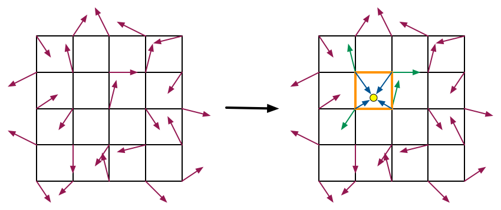
計算上
取得輸入訊號後
會優先計算出輸入訊號與晶格頂點之間的相對向量
在取得各晶格頂點的隨機梯度向量後
將兩向量進行點積計算而得到各晶格頂點所代表的隨機值
Perlin Noise with Point Interpolating
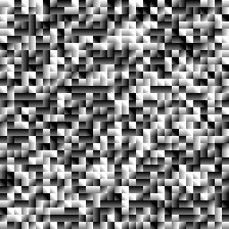
Perlin Noise with Linear Interpolating
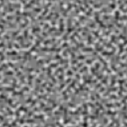
Perlin Noise with Fade1 Interpolating
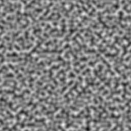
Perlin Noise with Fade2 Interpolating
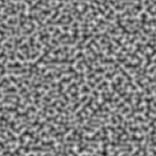
Perlin Noise – C#
private static Vector2[] m_gradients2D = {
new Vector2( 1f, 0f),
new Vector2(-1f, 0f),
new Vector2( 0f, 1f),
new Vector2( 0f,-1f),
new Vector2( 1f, 1f).normalized,
new Vector2(-1f, 1f).normalized,
new Vector2( 1f,-1f).normalized,
new Vector2(-1f,-1f).normalized
};
private const int GRADIENT_MASK_2D = 7;
private static float m_sqrt2 = Mathf.Sqrt(2f);
private static float Dot(Vector3 gradient, float x, float y)
{
return gradient.x * x + gradient.y * y;
}
private static float Perlin2D (Vector3 point, InterpolateMethodDelegate interpolateMethod, float frequency)
{
point *= frequency;
int ix0 = Mathf.FloorToInt(point.x);
int iy0 = Mathf.FloorToInt(point.y);
float tx0 = point.x - ix0;
float ty0 = point.y - iy0;
float tx1 = tx0 - 1;
float ty1 = ty0 - 1;
ix0 &= HASH_LENGTH;
iy0 &= HASH_LENGTH;
int ix1 = ix0 + 1;
int iy1 = iy0 + 1;
int h0 = m_hash[ix0];
int h1 = m_hash[ix1];
Vector2 g00 = m_gradients2D[m_hash[h0 + iy0] & GRADIENT_MASK_2D];
Vector2 g10 = m_gradients2D[m_hash[h1 + iy0] & GRADIENT_MASK_2D];
Vector2 g01 = m_gradients2D[m_hash[h0 + iy1] & GRADIENT_MASK_2D];
Vector2 g11 = m_gradients2D[m_hash[h1 + iy1] & GRADIENT_MASK_2D];
float v00 = Dot(g00, tx0, ty0);
float v10 = Dot(g10, tx1, ty0);
float v01 = Dot(g01, tx0, ty1);
float v11 = Dot(g11, tx1, ty1);
float xLerp1 = interpolateMethod(v00, v10, tx0);
float xLerp2 = interpolateMethod(v01, v11, tx0);
float sample = interpolateMethod(xLerp1, xLerp2, ty0);
return sample * m_sqrt2;
}Perlin Noise – Unity Shader
fixed3 hash33(fixed3 p)
{
fixed3 mod = fixed3(0.1031, 0.11369, 0.13787);
p = frac(p * mod);
p += dot(p, p.yxz + 19.19);
return -1.0 + 2.0 * frac(fixed3((p.x + p.y) * p.z, (p.x + p.z) * p.y, (p.y + p.z) * p.x));
}
fixed perlin_noise(fixed3 p)
{
fixed3 pi = floor(p);
fixed3 pf = p - pi;
fixed3 t = pf * pf * pf * (6 * pf * pf - 15 * pf + 10);
fixed3 p1 = fixed3(0, 0, 0);
fixed3 p2 = fixed3(1, 0, 0);
fixed3 p3 = fixed3(0, 1, 0);
fixed3 p4 = fixed3(1, 1, 0);
fixed3 p5 = fixed3(0, 0, 1);
fixed3 p6 = fixed3(1, 0, 1);
fixed3 p7 = fixed3(0, 1, 1);
fixed3 p8 = fixed3(1, 1, 1);
fixed g1 = dot(hash33(pi + p1), pf - p1);
fixed g2 = dot(hash33(pi + p2), pf - p2);
fixed g3 = dot(hash33(pi + p3), pf - p3);
fixed g4 = dot(hash33(pi + p4), pf - p4);
fixed g5 = dot(hash33(pi + p5), pf - p5);
fixed g6 = dot(hash33(pi + p6), pf - p6);
fixed g7 = dot(hash33(pi + p7), pf - p7);
fixed g8 = dot(hash33(pi + p8), pf - p8);
fixed x1 = lerp(g1, g2, t.x);
fixed x2 = lerp(g3, g4, t.x);
fixed x3 = lerp(g5, g6, t.x);
fixed x4 = lerp(g7, g8, t.x);
fixed3 y1 = lerp(x1, x2, t.y);
fixed3 y2 = lerp(x3, x4, t.y);
return lerp(y1, y2, t.z) + 0.5;
}Simplex Noise 是 Ken Perlin 在 2001 發表的 Perlin Noise 的改良版本
或許已經有人注意到在 Value Noise 及 Perlin Noise 中
晶格結構的頂點數會隨著維度上升而增加
且在超過三維後會難以理解晶格結構的表現
有別於 Perlin Noise 是以方形來表示晶格結構
Simplex Noise 的晶格結構是以單形（Simplex）來表示
一維空間中對應線段，共兩個頂點
二維空間中對應正三角型，共三個頂點
三維空間中對應正三角體，共四個頂點
在 N 維空間中會使用 N + 1 個頂點
那麼問題來了
如何判斷輸入訊號位在哪個單形晶格中就是 Simplex Noise 最難理解的部分
以二維空間來舉例
二維空間的晶格轉換是正方形到正三角形
每個方形會對應成兩個三角形
三角形
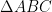
原始座標為 A（0, 0）、B（1, 0）、C（1, 1）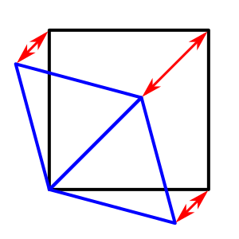
將偏移量設定為 s
那麼轉換後的正三角形  座標為 A（0, 0）、B（1 – s, -s）、C（1 – 2s, 1 – 2s）
座標為 A（0, 0）、B（1 – s, -s）、C（1 – 2s, 1 – 2s）
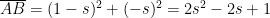
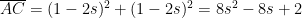
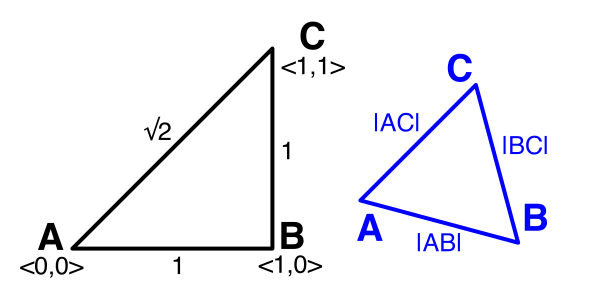
因為轉換後三角形三邊長相等
所以可以求得
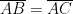
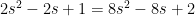
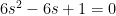
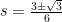
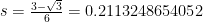
接著需要求得三角型轉換成方形的偏移量 s
頂點 C（x + 2sx, y + 2sy）需要轉換到（1, 1）
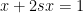
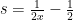
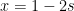
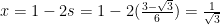
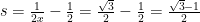
Simplex Noise
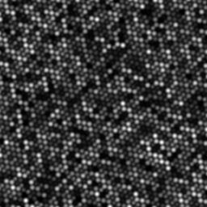
Simplex Noise – C#
private static float SQUARES_TO_TRIANGLES = 0.2113248654052f; //(3f - Mathf.Sqrt(3f)) / 6f
private static float TRIANGLES_TO_SQUARES = 0.3660254037844f; //(Mathf.Sqrt(3f) - 1f) / 2f
private static float Simplex2D (Vector3 point, InterpolateMethodDelegate interpolateMethod, float frequency)
{
point *= frequency;
float skew = (point.x + point.y) * TRIANGLES_TO_SQUARES;
float sx = point.x + skew;
float sy = point.y + skew;
int ix = Mathf.FloorToInt(sx);
int iy = Mathf.FloorToInt(sy);
float value = Simplex2DFunction(point, ix, iy);
value += Simplex2DFunction(point, ix + 1, iy + 1);
if (sx - ix >= sy - iy)
{
value += Simplex2DFunction(point, ix + 1, iy);
}
else
{
value += Simplex2DFunction(point, ix, iy + 1);
}
return value * (8f * 2f / HASH_LENGTH) - 1f;
}
private static float Simplex2DFunction(Vector3 point, int ix, int iy)
{
float unskew = (ix + iy) * SQUARES_TO_TRIANGLES;
float x = point.x - ix + unskew;
float y = point.y - iy + unskew;
float x2 = x * x;
float y2 = y * y;
float f = 0.5f - x2 - y2;
if (f > 0)
{
float f3 = f * f * f;
int hx = ix & HASH_LENGTH;
int hy = iy & HASH_LENGTH;
float hash = m_hash[m_hash[hx] + hy];
return f3 * hash;
}
return 0;
}Simplex Noise – Unity Shader
fixed simplex_noise(fixed3 p)
{
fixed tetrahedraToCube = 0.333333333;
fixed cubeToTetrahedra = 0.166666667;
fixed skew = (p.x + p.y + p.z) * tetrahedraToCube;
fixed3 i = floor(p + skew);
fixed unskew = (i.x + i.y + i.z) * cubeToTetrahedra;
fixed3 d0 = p - i + unskew;
fixed3 e = step(fixed3(0, 0, 0), d0 - d0.yzx);
fixed3 i1 = e * (1.0 - e.zxy);
fixed3 i2 = 1.0 - e.zxy * (1.0 - e);
fixed3 d1 = d0 - (i1 - 1.0 * cubeToTetrahedra);
fixed3 d2 = d0 - (i2 - 2.0 * cubeToTetrahedra);
fixed3 d3 = d0 - (1.0 - 3.0 * cubeToTetrahedra);
fixed4 h = max(0.5 - fixed4(dot(d0, d0), dot(d1, d1), dot(d2, d2), dot(d3, d3)), 0.0);
fixed4 n = h * h * h * h * fixed4(dot(d0, hash33(i)), dot(d1, hash33(i + i1)), dot(d2, hash33(i + i2)), dot(d3, hash33(i + 1.0)));
return dot(fixed4(31.316, 31.316, 31.316, 31.316), n);
}這邊也簡單的製作了一個雜訊產生器
可以用來產生並儲存雜訊貼圖
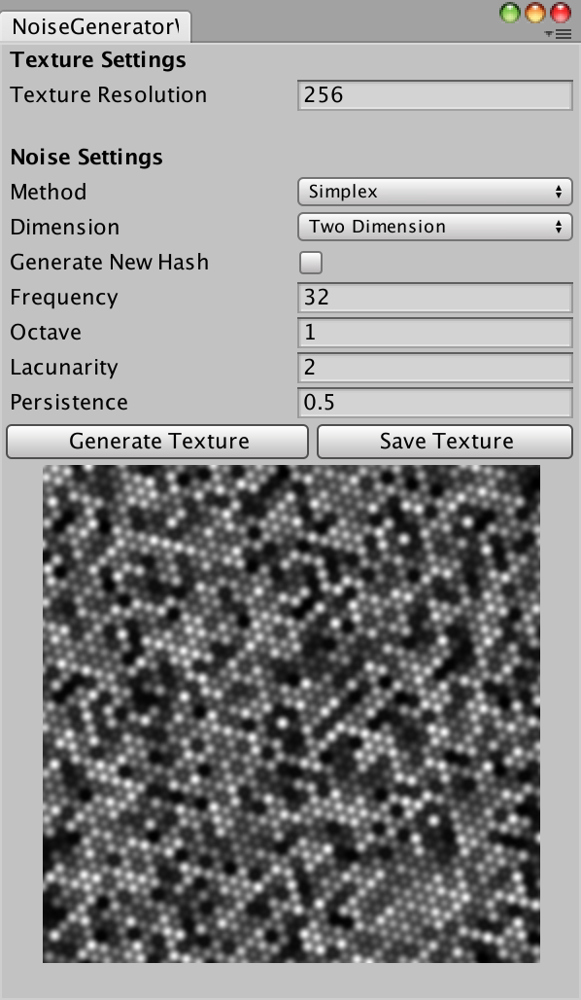
此外還可以透過疊加不同的雜訊
來產生出不一樣的紋理
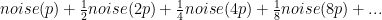
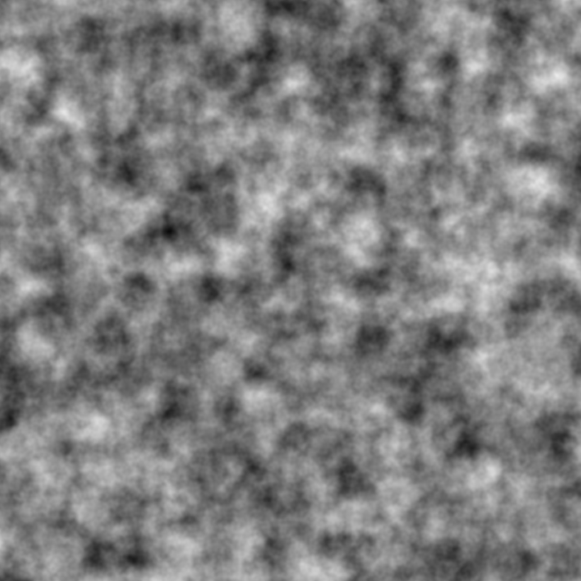
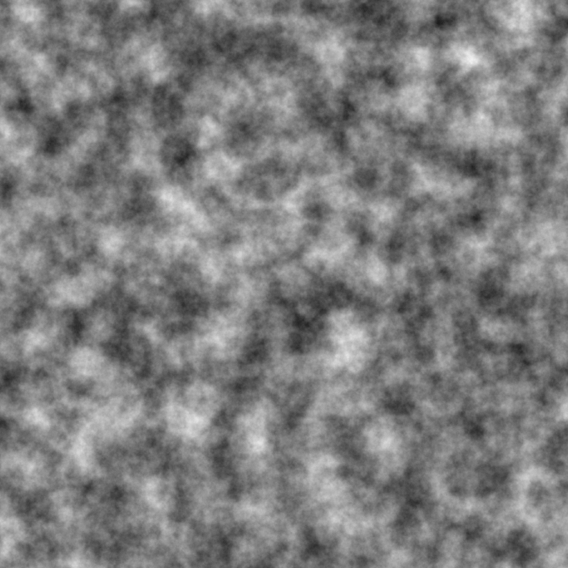
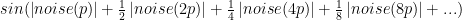
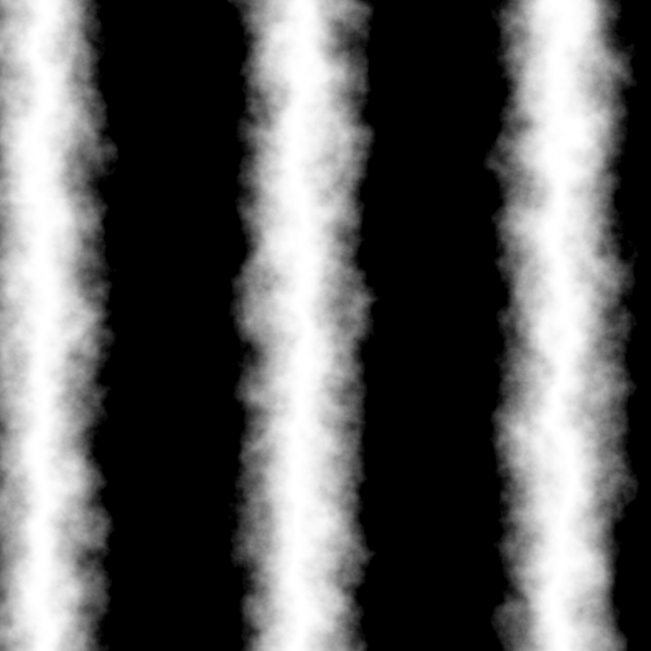
White noise – Wikipedia
Perlin noise – Wikipedia
Simplex noise – Wikipedia
【图形学】谈谈噪声 – candycat – CSDN博客
Understanding Perlin Noise
Improving Noise by Ken Perlin
GLSL Noise Algorithms
Noise, a Unity C# Tutorial
Simplex Noise, a Unity C# Tutorial
Chapter 2 Noise Hardware Ken Perlin